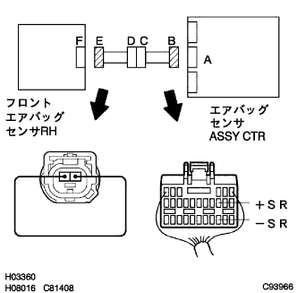

DTC B1156/15 Front airbag sensor RH failure |
DTC B1157/15 Front airbag sensor RH failure |
| DTC No. | DTC detection item | Place of problem |
|---|---|---|
| B1156/B1157/15 |
|
|
| Step 1 | Front airbag sensor RH circuit (+B short circuit) inspection (airbag sensor ASSY CTR-Front airbag between sensor RH) |
Separate the battery's minihana stormy and wait for 90 seconds.
Cut the connector from the airbag sensor ASSY CTR and front airbag sensor RH.
Connect the battery minor stormy and turn on the IG switch.
Use SST (Toyota Electrical Tester) to inspect the voltage between+SR and -SR terminals and body earths of connector B.
|
| ||||
| OK | |
| Step 2 | Front airbag sensor RH circuit (ground short circuit) inspection (airbag sensor ASSY CTR-Front airbag between sensor RH) |
Set the IG switch to OFF (Lock).
Separate the battery's minihana stormy and wait for 90 seconds.
Use SST (Toyota Electrical Tester) to check the resistance value between+SR and -SR terminals and body earth of connector B.
|
| ||||
| OK | |
| Step 3 | Front airbag sensor RH circuit (disconnection) inspection (Airbag sensor ASSY CTR-Front airbag between sensor RH) |
|  |
Use SST to shorten the+SR and -SR terminals of the connector E.
Use SST (Toyota Electrical Tester) to put a tester stick on the+SR of the connector B, -sr terminal, and check the resistance value between the connector B-connector E.
|
| ||||
| OK | |
| Step 4 | Front airbag sensor RH single inspection |
Use the SST (Toyota Electrical Tester) to check the resistance of the front airbag sensor RH to the+SR of the front airbag sensor RH, the-SR terminal.
|
| ||||
| OK | |
| Step 5 | Airbag sensor ASSY inspection |
Unlock the short circuit between the+SR and -SR terminals of the connector E.
Connect the connector to the airbag sensor ASSY CTR and front airbag sensor RH.
Connect the battery's minihana stormy, turn on the IG switch and wait for 60 seconds.
Use the SST to delete the diag code, and then check the diag code again.
For code reading with Warnin Grand Lamp
For code reading by Tascan
|
| ||||
| OK | ||
| ||
| Step 6 | Engine room main wire (+B short circuit) inspection (between relay connector-Front airbag sensor RH) |
Set the IG switch to OFF (Lock).
Separate the battery's minihana stormy and wait for 90 seconds.
Separate the connector C and d.
Connect the battery minor stormy and turn on the IG switch.
Use SST (Toyota Electrical Tester) to inspect the voltage between+SR and -SR terminals and body earths of connector D.
|
| ||||
| OK | ||
| ||
| Step 7 | Engine Room Main Wires (Earth Short Direct) Inspection (Relay Connector-Front Airbag Sensor RH) |
Separate the connector C and d.
Use SST (Toyota Electrical Tester) to check the resistance value between+SR and -SR terminals and body earth of the connector D.
|
| ||||
| OK | ||
| ||
| Step 8 | Engine Room Main Wire (Disconnected) Inspection (Between Relay Connector-Front Airbag Sensor RH) |
Separate the connector C and d.
Use SST (Toyota Electrical Tester) to apply a tester stick to the+SR and -sr terminals of the connector D, and check the resistance value between the connector D-connector E.
|
| ||||
| OK | ||
| ||